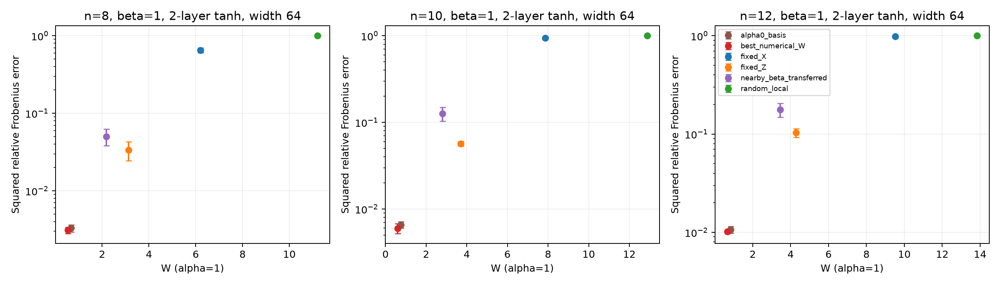
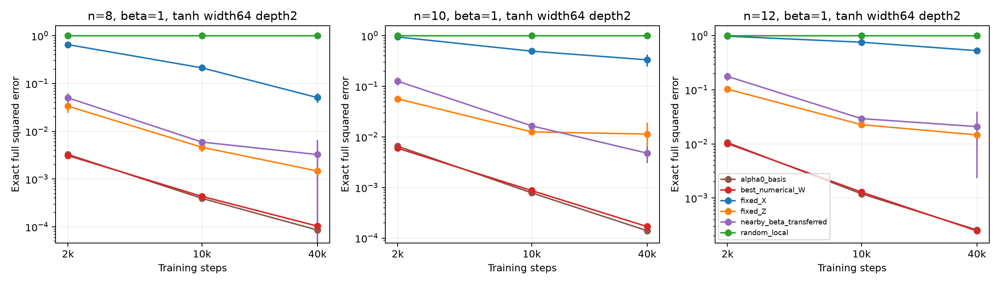
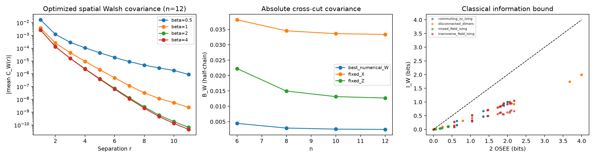
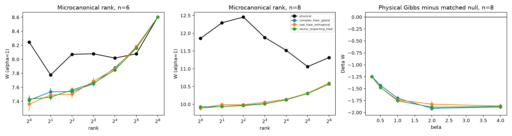
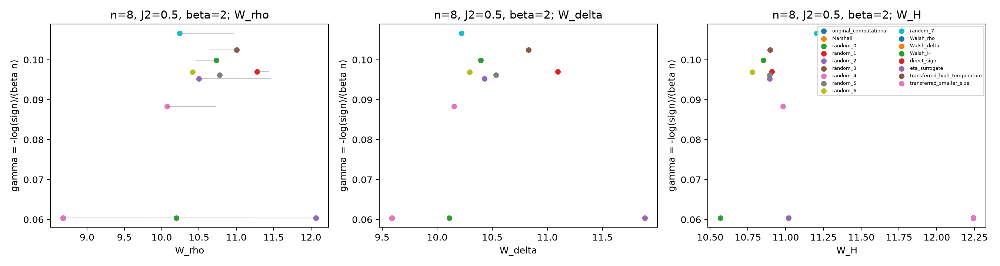
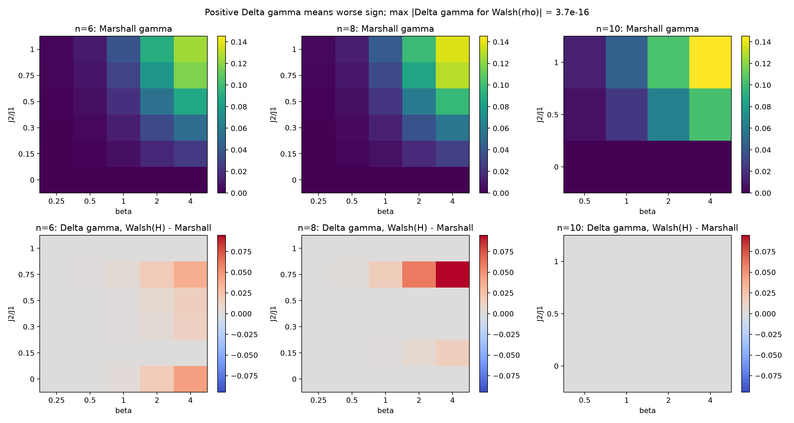

GitHub 精简发布版：包含全部标量结果、图表、配置和验收记录。较大 CSV 使用 gzip 压缩；原始数组、学习曲线、模型权重、缓存和实验压缩包保留在本地完整运行目录，没有上传。本页的完整实验验收记录针对本地完整数据。
范围按用户要求收敛到数小时内的首批实验。以下结果对应本次已保存的原始数据；不代表完成原始 YAML 的全部网格。
阶段状态：R1: complete；R2: complete；R3: complete；R4: complete；R1_extended: complete
在 β=1、两层 tanh、宽度64、2,000步的同预算比较中，平方相对误差如下（8种子均值）：
| basis | fixed_X | best_numerical_W | alpha0_basis |
|---|---|---|---|
| n | |||
| 8 | 0.65366 | 0.0031095 | 0.0032933 |
| 10 | 0.94671 | 0.0059885 | 0.0065703 |
| 12 | 0.98177 | 0.010148 | 0.010629 |
这些点支持“合适的物理基底能显著降低有限网络的表示与训练难度”。更广的首批网格中 α=0 基底常优于 α=1 数值最优基底，说明最小化某个固定 α 的 W 与最小化实际训练误差仍有区别。
同一选定配置延长到40,000步后的8种子均值（各列训练预算相同）：
| basis | fixed_X | best_numerical_W | alpha0_basis |
|---|---|---|---|
| n | |||
| 8 | 0.0509103 | 0.000103864 | 8.60254e-05 |
| 10 | 0.334912 | 0.000169284 | 0.000140385 |
| 12 | 0.531097 | 0.000247622 | 0.000257012 |
同谱、同 Sᶻ 扇区的随机基准也不能解释全部结构：XXZ n=8、β=1 时，物理 W=8.19548，扇区 Haar 均值 9.95001（标准误 0.01985）。
QMC 首批结果为负：在已完成的 87 个物理参数点中，ρ 的 Walsh 最优实基底相对 Marshall 的有效改善点数为 0（判据 Δγ<−10⁻⁸）。本次 ρ 搜索也未找到比原始基底更低的 W，不能把这一结果解释成“ρ 的 W 降低后没有改善”。中心化 Gibbs 与 H 的目标则确实降低，仍未产生有效的 sign 改善。局域 Z gauge 的 W 最大变化为 4.312，平均符号保持不变。
Git 基线：2c860e90e7ee95239fdb2e8640df974f8b52072a。数值计算为 float64/complex128；MLP 为 float32；所有熵以 bit 为单位。计算基底中的 fixed_basis_spectrum 使用 X 方向 Walsh 轴；本报告 fixed_X 表示 U=I，fixed_Z 表示 U=H。优化基底使用 U_i=align_direction_to_z(n_i) H。
配置：实际运行配置；原方案；运行元数据；机器可读汇总；保存数据验收；单元测试记录；复现说明。精确的完成范围以各阶段 status 和表格为准。
修复了优化 MLP 的 Hadamard 基底对齐、复数 Gibbs 的虚部丢失、复数空间相关中缺失的共轭；将 α=0 的共享物理基底公式扩展到任意非 Hermitian 算符。旧 MLP 的误差字段明确为平方相对 Frobenius 误差。原始第一轮结果未改写。
| check | value |
|---|---|
| R1_independent_networks | 3.264000e+03 |
| R1_moment_abs_error_max | 8.260059e-14 |
| R1_square_spectral_floor_min_slack | 4.809117e-05 |
| R1_extended_networks | 5.760000e+02 |
| R1_extended_square_floor_min_slack | 3.585745e-05 |
| R1_repeat_2000_step_max_difference | 0.000000e+00 |
| R2_rows | 2.760000e+02 |
| R2_thermal_identity_error_max | 1.298202e-14 |
| R2_MI_minus_2OSEE_max | 2.562741e-15 |
| R2_inter_dimer_cov_max | 4.440892e-15 |
| R3_random_draws | 7.200000e+03 |
| R3_purity_error_max | 3.441691e-15 |
| R3_Haar_nonzero_variance_max_abs_z | 3.878350e+00 |
| R3_Haar_zero_variance_max_relative_error | 1.808115e-15 |
| R3_independent_validation_draws | 5.000000e+03 |
| R3_validation_max_abs_z | 2.289253e+00 |
| R4_physical_points | 8.700000e+01 |
| R4_basis_evaluations | 1.416000e+03 |
| R4_gauge_logsign_error_max | 0.000000e+00 |
| R4_gauge_W_change_max | 4.311709e+00 |
| R4_Marshall_logsign_abs_max | 2.842171e-14 |
| R4_stoquastic_logsign_abs_max | 2.842171e-14 |

下表是相同架构、参数点、初始化、2,000步预算下，各基底相对 fixed_X 的配对平方误差变化；负值表示改善。跨参数平均仅为描述性汇总，置信区间在每个参数/架构组内以8个种子计算，见详细 CSV。
| basis | reference | pairs | mean_delta | median_delta | fraction_improved | max_worsening | max_improvement |
|---|---|---|---|---|---|---|---|
| fixed_Z | fixed_X | 544 | -0.49352 | -0.54224 | 1 | -0.045699 | -0.90644 |
| random_local | fixed_X | 544 | 0.22982 | 0.20341 | 0 | 0.56538 | 0.012031 |
| best_numerical_W | fixed_X | 544 | -0.51351 | -0.55183 | 1 | -0.04506 | -0.97866 |
| nearby_beta_transferred | fixed_X | 544 | -0.35399 | -0.34154 | 1 | -0.00063723 | -0.87053 |
| alpha0_basis | fixed_X | 544 | -0.62711 | -0.68051 | 1 | -0.21749 | -0.97939 |
所有基底使用相同的均匀训练样本序列和独立留出集。保存了全部每25步的 mini-batch 学习曲线、模型参数、全矩阵误差和留出误差，并另存相同估算 FLOPs 的检查点。FLOPs 采用线性层前向/反向及 Adam 的明确近似公式，不等同于实测硬件指令数。square 网络的最大 Walsh degree 是 2^depth，对应谱尾给出不可突破的误差下界；tanh 不具有这个硬截断。
有限 α 的 W 更重视高阶谱尾，α=0 基底可能在实际短预算训练中更好；因此不能由单个 W 值直接推出最容易训练的基底。2,000步结果也不能排除优化尚未收敛的影响。
为区分训练预算与表示限制，仅对 n=8/10/12、β=1、宽度64、两层 square/tanh、两种目标、全部6基底和8种子，补做2,000/10,000/40,000步检查。原首批结果独立保留。

| basis | reference | pairs | mean_delta | median_delta | fraction_improved | max_worsening | max_improvement |
|---|---|---|---|---|---|---|---|
| fixed_Z | fixed_X | 96 | -0.42337 | -0.46133 | 1 | -0.03358 | -0.78247 |
| random_local | fixed_X | 96 | 0.52643 | 0.49419 | 0 | 0.96565 | 0.18076 |
| best_numerical_W | fixed_X | 96 | -0.44809 | -0.45876 | 1 | -0.034256 | -0.81866 |
| nearby_beta_transferred | fixed_X | 96 | -0.38893 | -0.40852 | 1 | -0.033559 | -0.76171 |
| alpha0_basis | fixed_X | 96 | -0.46303 | -0.49929 | 1 | -0.034276 | -0.81842 |

逐点检验了 Walsh degree 协方差与两项热关联的恒等式，保存热等时关联、虚时间 τ=β 关联、OSEE 和经典互信息。独立二聚体的跨二聚体协方差是零的对照。指数衰减拟合仅作有限尺寸描述，同时报告拟合点数和 R²；当前 n≤12 的数据不足以证明热力学极限面积律。

R3 沿用第一轮 XXZ 归一化 H=Σ(XX+YY+ΔZZ)，Δ=1；这与 R4 的 S=σ/2 归一化不同，不应跨模块直接比较同一数值的 β。每次随机化严格保留谱和纯度；扇区 Haar 额外保留各 Sᶻ 扇区的谱及权重。微正则窗口取完整能谱中部，保存窗口宽度、能量和能量匹配的 canonical β。随机置信区间是样本均值的95% Student-t区间；100个样本对重尾生成函数的精度仍有限。
complex Haar 解析式：E G = [a (1+e^{2α})^n + b (1+e^α)^{2n}]/P，a=(1−P/d)/(d²−1)，b=(P−1/d)/(d²−1)，P=Trρ²，d=2^n。单独记录 E[log G]/α 和 log(E[G])/α。满秩均匀态的方差理论上为0，浮点舍入不能作为统计标准误；分析时对这类点禁用 z-score。
初始100样本中，n=6、β=1 的生成函数均值出现最大约3.88标准误的偏差。另用独立种子增加5,000样本做精度检查（原数据保留）：三个 α 均落在解析均值的约2.3个标准误内，以下给出全部结果，而不把未落入95%区间的点删掉。
| n | beta | alpha | draws | seed | G_exact | G_mean | G_sem | zscore | reason | source_file |
|---|---|---|---|---|---|---|---|---|---|---|
| 6 | 1 | 0.5 | 5000 | 703194 | 29.505 | 29.362 | 0.062506 | -2.2893 | independent post-hoc precision check for largest nondegenerate deviation among initial 100-draw groups | R3_validation/independent_5000_draws.json |
| 6 | 1 | 1 | 5000 | 703194 | 1825.8 | 1807.3 | 9.2087 | -2.0178 | independent post-hoc precision check for largest nondegenerate deviation among initial 100-draw groups | R3_validation/independent_5000_draws.json |
| 6 | 1 | 2 | 5000 | 703194 | 4.36e+07 | 4.275e+07 | 6.0222e+05 | -1.4116 | independent post-hoc precision check for largest nondegenerate deviation among initial 100-draw groups | R3_validation/independent_5000_draws.json |
物理 Gibbs 的有限 α 数值最优 W 在可用时复用第一轮结果；对每个 Haar 样本再次优化 W 本轮暂缓。微正则/Gibbs 的差异不能解释为 ETH 失效。


平均符号严格定义为 Tr exp(−βH_U) / Tr exp(−βH_abs)，H_abs 的非对角元为 −|H_U,st|。下表是相对 Marshall 的配对 γ 变化；负值才表示该 worldline 表示中的改善。
| basis | reference | pairs | mean_delta | median_delta | fraction_improved | max_worsening | max_improvement |
|---|---|---|---|---|---|---|---|
| Walsh_rho | Marshall | 87 | -4.6126e-18 | 0 | 0 | 3.747e-16 | -2.7756e-16 |
| Walsh_delta | Marshall | 87 | 0.002638 | 1.7131e-06 | 0 | 0.046327 | -1.0362e-15 |
| Walsh_H | Marshall | 87 | 0.0098652 | 6.0158e-05 | 0 | 0.11674 | 0 |
| direct_sign | Marshall | 87 | -9.8251e-07 | -3.0531e-16 | 0.045977 | 0 | -3.9004e-05 |
| eta_surrogate | Marshall | 87 | 0.0086436 | 0 | 0 | 0.12114 | 0 |
| transferred_high_temperature | Marshall | 69 | -1.7984e-17 | 0 | 0 | 4.4409e-16 | -5.5511e-16 |
| transferred_smaller_size | Marshall | 42 | -1.0574e-17 | 0 | 0 | 0 | -2.2204e-16 |
同时检查优化是否真的降低了各自的 Walsh 目标，避免把搜索未成功与目标不预测 sign 混为一谈。下表以原始计算基底为目标值参考；H 的结果在不同温度中复用同一 Hamiltonian 基底。
| objective | basis | physical_points | points_with_W_reduction | mean_delta_W | max_W_reduction |
|---|---|---|---|---|---|
| W_rho | Walsh_rho | 87 | 0 | -2.0418e-16 | 1.7764e-15 |
| W_delta | Walsh_delta | 87 | 57 | -0.48841 | 1.5138 |
| W_H | Walsh_H | 87 | 87 | -1.587 | 2.0754 |
本轮保留了未改善和变差的基底。对角 Z gauge 使平均符号不变却可明显改变固定基底 W，排除了将两者简单一一对应的解释。直接优化仅表示给定搜索预算内的最佳结果，未证明全局最优，也不等同于实际 QMC 方差或运行时间改善。
分别导出固定物理参数点内的秩相关、跨 β/J2/n 的留出预测误差，以及高温/小尺寸基底迁移。留出预测使用仅物理参数的 ridge 基线，再单独加入 Walsh 指标；训练集统计量用于标准化。小规模外推结果只作为诊断。
依据配对误差和谱尾检查 α=0 与有限 α 的差别。空间关联若要推到面积律，需要更大尺寸及 MPO 的 χ、时间步长收敛。R3 生成函数重尾点需要更多独立样本。QMC 方向仅在有限预算精确结果显示稳定优势后才进入实际采样。原计划的全参数网格、全网格40,000步、n=12 全部 QMC 搜索及 R5 均未作为本轮完成项。随机局域 MLP 基底本轮每个尺寸只抽取一组，8个种子衡量网络初始化不确定性，不代表随机基底总体的不确定性。
原始 NPZ、学习曲线和模型权重保存在本地完整运行目录；GitHub 精简版不包含这些文件。初次失败尝试未进入报告统计，也未上传。